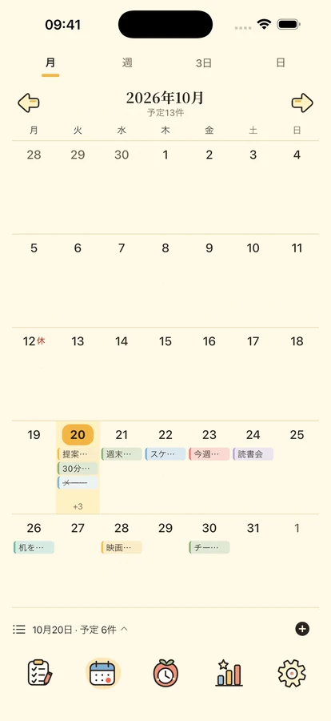
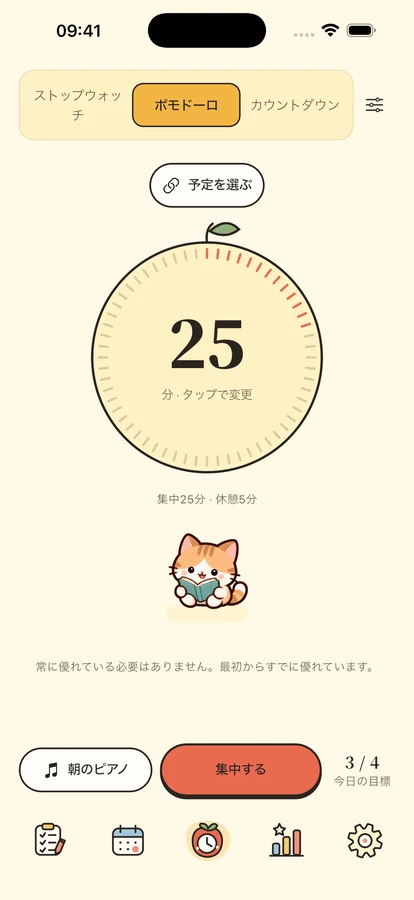
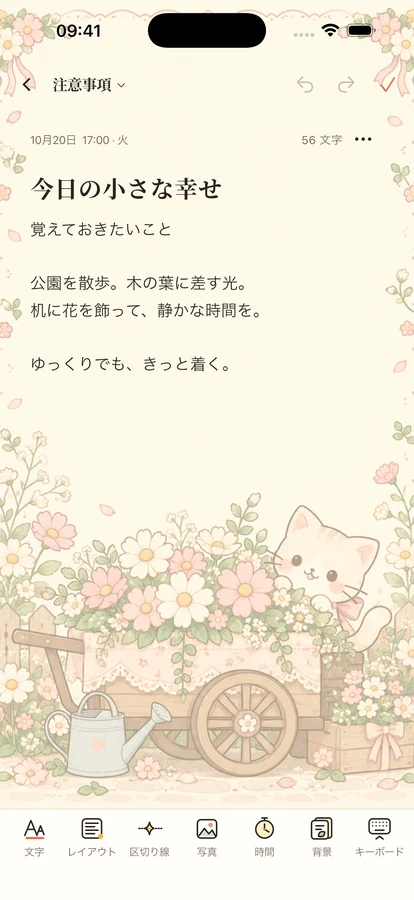

ひとつずつ、自分のペースで。
小さな一歩から
予定にも、時間にも、少しのゆとりを。

予定を、ふさわしい場所へ。
重要度と緊急度で整理する4象限。タイムラインや日・週・月のカレンダーで予定を確認できます。繰り返し、サブタスク、端末内の通知にも対応。
重要・緊急重要・緊急でない緊急・重要でないどちらでもない
今は、目の前のひとつに。
ポモドーロ、カウントダウン、ストップウォッチに、8曲のオフライン音楽と11種類の環境音。4人の仲間やフリップ時計と集中・休憩できます。全音源はPlusまたは3日間体験で利用可能。音楽1曲・環境音1種類・無音は無料です。 Plus: 時計のPlusスタイル · ウィジェットのPlusスタイル · 詳細統計 · 計画テンプレート · 自動クラウドバックアップ · バックアップ履歴.



忘れたくない日と、思いつきを。
書式付きメモ、写真、便せんを保存し、日付やカテゴリで振り返れます。記念日はカウントダウンで。iOS 17以降では予定・カレンダー・集中・記念日・メモのウィジェットも使えます。
毎日の記録は、あなたのもの。
端末内の機能はログイン不要。クラウドバックアップは手動、利用状況の分析は初期設定でオフ。書き出し、プライバシー設定、アカウント削除を自分で管理できます。
プライバシー